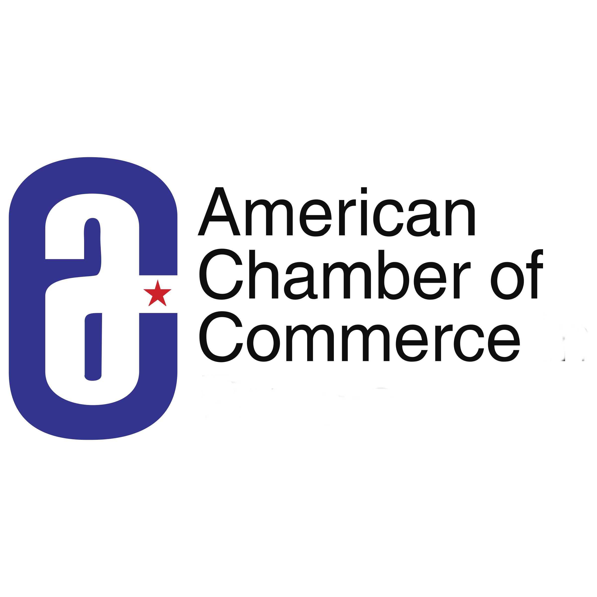

Center for Entrepreneurship Partners with American Chamber of Commerce Since 2003
Collaborative Efforts to Strengthen Local Ecosystems Worldwide
nesen has been partnering with the American Chamber of Commerce since 2003. The American Chamber of Commerce is a nonprofit, nongovernmental organization that provides information, networking opportunities, business support services, and advocacy to promote a mutually beneficial bilateral business environment for U.S. companies. Through this partnership, nesen and the American Chamber of Commerce have developed programs aimed at strengthening local ecosystems around the world by connecting U.S. entrepreneurs, ecosystem builders, and community leaders.
About Our Partner: American Chamber of Commerce
The American Chamber of Commerce (AmCham) is dedicated to fostering a positive business environment through its extensive network and resources. Since its inception, AmCham has provided invaluable support to U.S. companies seeking to establish and grow their presence internationally. By hosting regular networking events, offering business support services, and engaging in advocacy efforts, AmCham plays a crucial role in the global business landscape. The collaboration with nesen has further amplified AmCham's impact, enabling the development of specialized programs designed to address the needs of entrepreneurs and ecosystem builders. These initiatives have included mentorship programs, workshops, and regional conferences, all aimed at fostering innovation and sustainable growth. Together, nesen and AmCham continue to drive forward-thinking initiatives that nurture entrepreneurial ecosystems and support business development worldwide.
